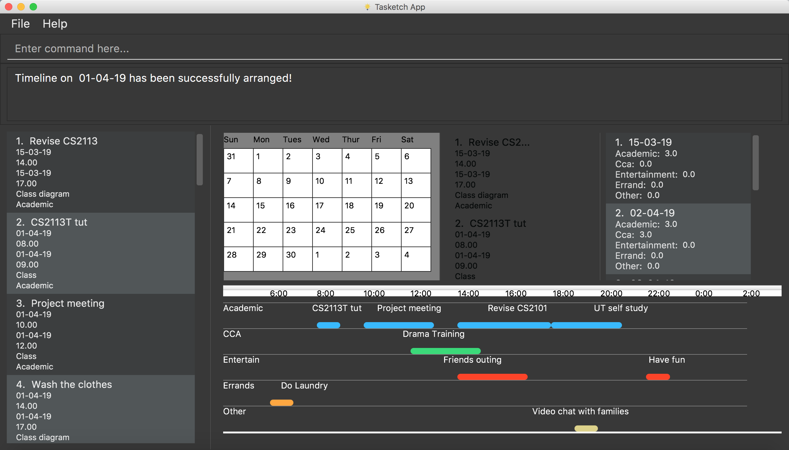
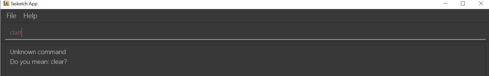
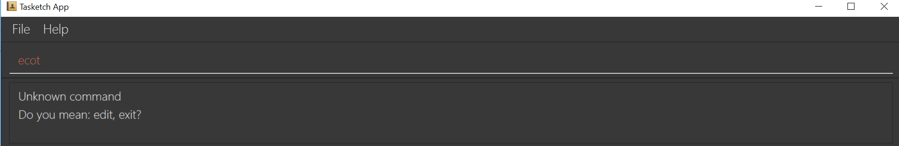
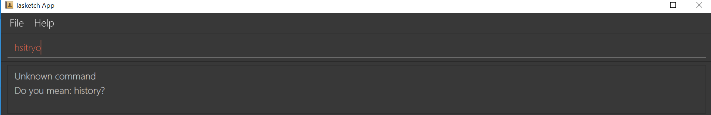

PROJECT: Tasketch
About the project
-
My team and I were tasked with enhancing a basic command line interface addressbook for our Software Engineering project. We chose to morph it into an time management system called Tasketch. It is an application that helps users to manage their everyday time by giving users an overview of all the time planned for all the tasks in a daily manner. It also helps users to be aware of all the tasks dateline too.
Figure 1: An overview of our project
-
My primary role was to design and write the codes for the wrong command suggestion feature as well as the import and export feature. Also, I have enhanced a bit on the existing
clearcommand.
Overview
The following sections illustrate these enhancements in more detail, as well as the relevant sections I have added to the user and developer guides in relation to these enhancements.
Note the following symbols and formatting used in this document:
| Symbol | Indication |
|---|---|
|
Grey highlight (called a mark-up) word(s) indicate that this is a command that can be inputted into the command line and executed by the application. |
|
Grey highlight text with brackets indicates a component, class or object in the architecture of the application. |
NOTE |
This indicates an important information |
The blue text indicates there is an URL. And when you click it, you can jump to the corresponding web page. |
Summary of contributions
The following section shows a summary of code, document and other minor helpful contribution I have made to our project. And some URL for the pull requests and issues are also provided. |
-
Major enhancement:
-
Added the ability to give users suggestion when they type the command words wrongly.
-
What it does:
It makes system smarter to guess and give suggestion about what is the most similar command with the wrongly typed command word. -
Justification:
When you are not familiar about our product or you are typing too fast, you may type the command word wrongly. You can realize the mistake more quickly by looking at the suggestion given by the product. -
Highlights:
It makes our product more user-friendly by guessing what you mean. And the system will response to your wrong command accordingly, instead of responding all wrong commands with only one sentence "Unknown command". -
Credits:
Codes and ideas related are inspired by CS2113-AY1819S1-W12-1
-
-
Added the ability to import and export tasks.
-
What it does:
It allows you to import tasks in a json file into Tasketch and export filtered tasks or all tasks into a json file. -
Justification:
In the situation that you and your friend have the same module, you two may have same tasks. This feature allows you to import all these tasks without adding them one by one, if your has added all of them in his Tasketch. -
Highlights:
It allows you to use our product on different laptops because you can just download one json file and import it into another Tasketch. -
Credits:
Codes and ideas related are inspired by CS2113-AY1819S1-W12-1
-
-
-
Minor enhancement:
Morphed codes to open help window, to exit the program and to undo and redo the previous command. -
Code contributed: [RepoSence Report]
-
Other contributions:
-
Project management:
-
Managed releases
v1.1-v1.4(3 releases) on GitHub
-
-
Enhancements to existing features:
-
Documentation:
-
Did cosmetic tweaks to existing contents of the User Guide, developer guide to make them more organized and user friendly: #118, to be added
-
-
Community:
-
Contributions to the User Guide
Given below are some sample sections I contributed to the User Guide in terms of the Wrong Command Suggestion and the Import and Export feature. If you would like to see the original part in our UserGuide, you can simply click blue titles. |
Getting wrong command suggestions
There so many commands in the app, so to help you to use the app easier, it will tell you what you have typed wrongly automatically,
by giving a list of closest approximations of word through the message box after pressing ENTER.
Examples：
-
If you want to type
clearbut typedclarrinstead, the system will tell you that it is an unknown command, and would suggest the commandclearinstead.Figure 2: Outcome for example 1.
-
If you want to type
exitbut typedecotinstead, the system will tell you that it is an unknown command, and would suggest the commandexitandeditinstead.Figure 3: Outcome for example 2.
-
If you want to type
historybut typedhsitryoinstead, the system will tell you that it is an unknown command, and would suggest the commandhistoryinstead. Although there are more than 2 alphabets different from the correct command, the system will smartly show the suggestion becausehsitryohas the same alphabets withhistoryFigure 4: Outcome for example 3.
Import/Export
This feature allows you to import an existing json file which contains your other tasks in Tasketch. Also, it supports the product to export what you have in the Tasketch to a json file if you want.
Export tasks: export
You can save all tasks or filtered tasks into a json file. It can be used with list or find.
Format: export FILENAME.json [CATEGORY]
Examples:
-
find Revise
export revise.json
Exports all tasks which are named with keyword "Revise" in revise.json. -
export academic.json a
Exports all academic tasks into academic.json. -
list 13-03-19
export 13-03-19.json
Exports all tasks which starts on March 13, 2019 in 13-03-19.json. -
export Tasketch.json
Exports all tasks which are shown on the left list in Tasketch.json.
|
Import tasks: import
If you have a classmate who have the same module with you, and you forget to add any related task into Tasketch. There are a brunch of tasks in this module. In this case, you do not need to add them one by one. Instead, you can simply ask your friend to export all tasks about this module and send the file to you. What you have to do is just simply import it.
Format: import FILENAME.json
Examples:
-
import revise.json
Imports all tasks in revise.json into Tasketch.
|
Contributions to the Developer Guide
Given below are sections I contributed to the Developer Guide in terms of the Wrong Command Suggestion feature as well as the Import and Export feature. If you would like to see the original part in our DeveloperGuide, you can simply click blue titles. |
Wrong Command Suggestion feature
The suggestions feature gives users helpful suggestions on what command to type, and corrections for commands when incorrect commands are being entered.
Current Implementation
When a user completes entering a command (after pressing ENTER key), if the command typed is invalid, the system will suggest a similar command based on the edit distance (which will be explained later).
Given below is an example usage of how the WrongCommandSuggestion behaves at each step.
Step 1: The user would type in the command string wrongly.
Step 2: The command would be parsed into the TaskBookParser class. Since no commands match the word exactly, it would fall into the default case.
Step 3: The default case would extract out only the command portion of the user input, and input it into the WrongCommandSuggestion class.
Step 4: WrongCommandSuggestion would first check the alphabets occurrence in the command word typed by users, if there is any correct command word has the same alphabets occurrence, WrongCommandSuggestion will return this command word immediately.
Step 5: Otherwise, WrongCommandSuggestion then would then instantiate the StringSimilarity class to find the nearest match of a word.
Step 6: editDistance in StringSimliarity class would be called to find out the edit distance between two words. These two words would be the wrong command the user has input, and the list of available commands in the whole application.
Step 7: WrongCommandSuggestion would then compare if the edit distance of the current command is shorter than the current shortest edit distance command (which is initialised to 3 edits). If it is shorter, it would then suggest the current command.
Step 8: WrongCommandSuggestion would then return the suggestion in a string, which would then be inputted into the CommandException, to be thrown to the LogicManager class.
The following sequence diagram shows an example of how the WrongCommandSuggestion operation works with wrongly spelt command clarr (closest command is clear):
Design Considerations
-
Alternative 1: Compare the input command and the actual command character by character and see which command has the most matches.
-
Pros: Easy to implement.
-
Cons: Not as accurate or reliable in terms of giving a correct match of command.
-
-
Alternative 2: Use a string matching algorithm to implement the matching and difference calculation between the command and the user input.
-
Pros: Accurate prediction or suggestions from actual commands.
-
Cons: Difficult to implement, and might require more processing overhead.
-
-
Alternative 3(current choice): Combination of the two.
-
Pros: More accurate prediction.
-
Cons: More difficult to implement.
-
Import/Export feature
Current Implementation
Import
This operation is exposed in the Model interface as Model#importTaskBook().
Given below is an example usage scenario and how the export mechanism behaves at each step.
Step 1: The user calls the import command.
Step 2: The LogicManager calls parseCommand with the user input.
Step 3: The TaskBookParser is called and it returns a ImportCommand object to LogicManager.
Step 4: The LogicManager calls execute() on the ImportCommand object
Step 5: The Logic component then interacts with the Model component by calling Model#importTasksFromTaskBook().
Step 6: The Model interface creates a new Import object and then pass the filePath to the ImportManager.
Step 7: The ModelManager will call ImportManager#readTaskBook() and get a ReadOnlyTaskBook object.
|
The ImportManager class will first check whether the task in the file exists in Tasketch, if there is an existing task, just ignore this task. |
Step 8: The ImportManager will then will call JsonFileStorage#loadDataFromSaveFile().
Step 9: The JsonFileStorage will then will call JsonUtil#readJsonFile().
Step 10: And then the ModelManager will then will call addTasksToTaskBook().
Step 11: If there is any new task added, the ModelManager will then call Model#updateFilteredTaskList() .
The following sequence diagram shows how the Import operation works:
Export
This operation is exposed in the Model interface as Model#exportTaskBook().
Given below is an example usage scenario and how the export mechanism behaves at each step.
Step 1: The user calls the export command.
Step 2: The LogicManager calls parseCommand with the user input.
Step 3: The TaskBookParser is called and it returns a ExportCommand object to LogicManager.
Step 4: The LogicManager calls execute() on the ExportCommand object
Step 5: The Logic component then interacts with the Model component by calling Model#exportFilteredTaskBook() of the Model interface.
Step 6: The Model interface creates a new Export object and then pass the filteredTaskList.
Step 7: The ExportManager object calls ExportManager#saveFilteredTasks().
Step 8: Then ExportManager class will call JsonFileStorage#saveDataToFile().
Step 9: The JsonFileStorage class will call JsonUtil#saveJsonFile().
Step 10: The JsonUtil class will call FileUtil#writeToFile().
Step 11: The FileUtil class will finally call File#write().
|
This File object will creates a new file if there is no existing file with the same name. And if there is an existing file, it will just write to this file no matter it is empty or not. |
The following sequence diagram shows how the Export operation works:
Design Considerations
Aspect: Use what kind of file
-
Alternative 1 (current choice): Json file
-
Pros: Easier to implement because the addressbook itself uses Json file to store the data.
-
Cons: Hard for users to read about the exported file.
-
-
Alternative 2: Xml file
-
Pros: Xml is more widely used and it shows tha data better.
-
Cons: Hard to implement.
-